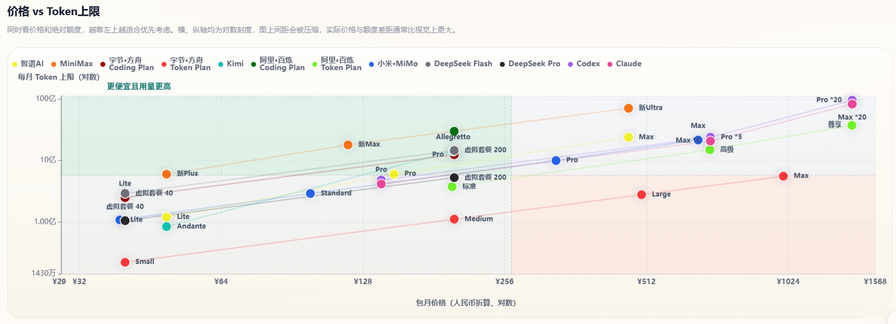

平台对比 · Coding Plan
2026年6月28日 Coding Plan平台全面对比｜智谱、MiniMax、DeepSeek、GLM-5.2、Kimi-K2.7、字节方舟促销
本页内容
更新日期 2026.6.28 数据来源 https://vibecoding.dreamfree.space
- 数据统计截至 2026.6.28，重点关注 6 月下半场模型与套餐变化。
- 智谱 Coding Plan 已切换到 GLM-5.2 主力口径，仍需抢购，热门时段库存紧张。
- Kimi 全线升级 Kimi-K2.7-Code，基础档位可买但实测月用量依旧偏保守。
- 字节·方舟延续 6.8-8.8 首两月 2.5 折，且部分模型出现 2.5~4 倍用量活动。
- 字节·方舟 Coding Plan 在 6 月下旬重新限购，Lite/Pro 抢购属性回归。
- 优云智算新增 GLM-5.2，当前为限时 x2 倍率。
- 联通云 Coding Plan 已下线，对比表已不再收录该平台套餐。
6 月底这轮更新，最大的变化不是“又多了几个新模型”，而是平台分层进一步清晰：高质量代码模型继续向 GLM-5.2 与 Kimi-K2.7-Code 靠拢，头部平台在促销和限购之间反复拉扯，真正稳定可买、长期可用的套餐反而更容易筛选。与其纠结名字叫 Coding Plan 还是 Token Plan，不如直接看三件事：同价位可用量、是否要抢购、模型池是否覆盖你的实际开发场景。本文按这个逻辑，把当期主流平台一次讲透。
一、三种常见计费方式
- Coding Plan：多数平台表面按请求次数计量，实际都在内部按模型倍率折算 token。优点是上手直观，缺点是高峰期倍率和限购风险更高。
- Token Plan：定价和上限更透明，适合能明确估算月用量的人群。不同平台对长上下文、工具调用和高阶模型的扣减速度差异很大。
- API 按量计费：不绑月套餐，按实际消耗结算，低频或波动型开发最灵活。关键是要看缓存命中价格和输出价格，不只看输入单价。
1）6月下半场动态
GLM-5.2 已从单点优势走向多平台覆盖，智谱、字节·方舟、优云智算都已接入；Kimi 也把主力档位升级到 Kimi-K2.7-Code。
字节·方舟这期是典型“促销强、库存紧”：价格端给出 2.5 折和部分模型 2.5~4 倍用量，购买端却在 6 月下旬重新限购。
智谱延续“代码质量标杆 + 需要抢购”的组合，适合重质量人群。
阿里百炼继续强化 Token 体系，并补上 Qwen-3.7-Plus。
联通云 Coding Plan 已下线。
2）实际用量与价格对比
说明：Coding Plan 展示实测 Token 上限，Token Plan 展示官方月 Token 上限；无完整数据的套餐未列入下表。
| 平台 | 套餐 | 类型 | 包月价格 | 实测5小时Token上限 | 月Token上限 |
|---|---|---|---|---|---|
| 智谱AI | Lite | Coding Plan | ¥49 | 6M | 120M |
| 智谱AI | Pro | Coding Plan | ¥149 | 30M | 600M |
| 智谱AI | Max | Coding Plan | ¥469 | 120M | 2400M |
| MiniMax | Plus | Token Plan | ¥49 | 600M | |
| MiniMax | Max | Token Plan | ¥119 | 1800M | |
| MiniMax | Ultra | Token Plan | ¥469 | 7100M | |
| 字节·方舟 | Lite | Coding Plan | ¥40（活动首月约¥9.4） | 17M | 250M |
| 字节·方舟 | Pro | Coding Plan | ¥200（活动首月约¥47.4） | 83M | 1249M |
| 字节·方舟 | Small | Token Plan | ¥40 | 22M | |
| 字节·方舟 | Medium | Token Plan | ¥200 | 111M | |
| 字节·方舟 | Large | Token Plan | ¥500 | 278M | |
| 字节·方舟 | Max | Token Plan | ¥1000 | 556M | |
| Kimi | Andante | Coding Plan | ¥49 | 15M | 84M |
| Kimi | Allegretto | Coding Plan | ¥199 | 65M | 1428M |
| 阿里·百炼 | Pro | Coding Plan | ¥200 | 200M | 3000M |
| 阿里·百炼 | 标准 | Token Plan | ¥198 | 375M | |
| 阿里·百炼 | 高级 | Token Plan | ¥698 | 1500M | |
| 阿里·百炼 | 尊享 | Token Plan | ¥1398 | 3750M | |
| 小米·MiMo | Lite | Token Plan | ¥39 | 108M | |
| 小米·MiMo | Standard | Token Plan | ¥99 | 290M | |
| 小米·MiMo | Pro | Token Plan | ¥329 | 1002M | |
| 小米·MiMo | Max | Token Plan | ¥659 | 2162M | |
| 腾讯云 | Lite | Token Plan | ¥39 | 35M | |
| 腾讯云 | Standard | Token Plan | ¥99 | 100M | |
| 腾讯云 | Pro | Token Plan | ¥299 | 320M | |
| 腾讯云 | Max | Token Plan | ¥599 | 650M |

访问 https://vibecoding.dreamfree.space 可查看完整的价格 vs Token 上限对比图表、每元 Token 性价比密度图等可视化数据。
二、国内第一梯队平台核心特点
1. 智谱AI：GLM-5.2 代码质量标杆，依旧要抢购
跳转官网➡️ 智谱AI：GLM-5.2 代码质量标杆，依旧要抢购
综合评分：★★★★★
限购状态：全面限购，需要抢购。每日 10:00 限量发售 Lite、Pro、Max 套餐，热门时段常在 1 分钟内售罄。续订或有效期内升级不受限售影响。
抢购辅助：油猴抢购脚本（打不开可查看 GitHub 讨论）
核心优势： - 主力模型已升级到 GLM-5.2，代码生成、调试与重构能力仍是国产模型第一梯队。 - 提供免费 MCP 次数，与主流开发工具集成顺畅。 - GLM-5.2 / GLM-5-Turbo 在高峰期按更高倍率扣减额度；非高峰期有 1 倍抵扣限时福利（以官方当期规则为准）。
Coding Plan 价格体系： | 套餐 | 首月价格 | 连续包月 | 连续包季 | 连续包年 | 5小时请求数 | 月请求数 | |------|----------|----------|----------|----------|--------------|----------| | Lite | ¥46.55 | ¥49 | ¥132 | ¥470 | 1,200 | 24,000 | | Pro | ¥141.55 | ¥149 | ¥402 | ¥1430 | 6,000 | 120,000 | | Max | ¥445.55 | ¥469 | ¥1266 | ¥4502 | 24,000 | 480,000 |
不足：需要抢购；国际版折算后性价比因汇率波动较大。
适用人群：对代码质量要求高、能接受抢购的专业开发者。
2. MiniMax：Token 大池稳定，M3 体系适合长期高频
跳转官网➡️ MiniMax：Token 大池稳定，M3 体系适合长期高频
综合评分：★★★★★
订阅状态：不限购。公开订阅为 Plus、Max、Ultra 三档 Token Plan；Starter 与 Plus-极速仅老用户可续订。
核心优势： - 主力模型 MiniMax-M3，支持 1M 上下文、原生多模态与 Agent 工作流。 - Plus ¥49、Max ¥119、Ultra ¥469，横向对比仍是 Token 池最深的一档。 - 不限购，适合把 AI 编程当日常基础设施的个人开发者。
当前公开订阅套餐： | 套餐 | 类型 | 连续包月 | 月Token上限 | 适合场景 | |------|------|----------|-------------|----------| | Plus | Token Plan | ¥49 | 600M | 轻量个人开发 | | Max | Token Plan | ¥119 | 1800M | 高频 Agent 与多模态 | | Ultra | Token Plan | ¥469 | 7100M | 重度长时开发 |
不足：M3 月度体感较旧版 M2.7 更保守；新用户无法再买 Starter 等低门槛老档。
适用人群：预算有限、需要大 Token 池和多模态能力的个人开发者。
3. 字节·方舟：模型池最全，促销很强，但 Coding Plan 再度限购
跳转官网➡️ 字节·方舟：模型池最全，促销很强，但 Coding Plan 再度限购
综合评分：★★★★★
限购状态：6 月下旬 Coding Plan 重新限购，Lite、Pro 需抢购。
核心优势： - 唯一同时覆盖 GLM-5.2、Kimi-K2.7-Code、MiniMax-M3、DeepSeek-V4 等主流模型的全家桶平台。 - 6.8–8.8 首两月 2.5 折（Lite 活动首月约 ¥9.4、Pro 约 ¥47.4），可与邀请折扣叠加；DeepSeek-V4-Pro、GLM-5.1、Kimi-K2.6 等部分模型限时 2.5~4 倍用量。 - 促销期实测月 Token 明显提升：Lite 约 250M、Pro 约 1249M。
Coding Plan 价格体系： | 套餐 | 首月价格（活动） | 连续包月 | 5小时请求数 | 月请求数 | |------|------------------|----------|--------------|----------| | Lite | 约 ¥9.4 | ¥40 | 1,200 | 18,000 | | Pro | 约 ¥47.4 | ¥200 | 6,000 | 90,000 |
Token Plan 价格体系： | 套餐 | 连续包月 | 月Token上限 | |------|----------|-------------| | Small | ¥40 | 22M | | Medium | ¥200 | 111M | | Large | ¥500 | 278M | | Max | ¥1000 | 556M |
注意事项：不同模型倍率差异大，实际可用量需按常用模型估算；Coding Plan 限购后购买确定性下降。
适用人群：需要多模型切换、能抢到 Coding Plan 促销档的个人开发者。
4. Kimi：K2.7-Code 升级完成，体验均衡但基础档用量保守
跳转官网➡️ Kimi：K2.7-Code 升级完成，体验均衡但基础档用量保守
综合评分：★★★★☆
限购状态：不限购，全档位常态开放。
核心优势： - 全档支持 Kimi-K2.7-Code，代码与 Agent 能力同步升级。 - 多模态与实验性专业数据库功能，适合特定垂直场景。 - Andante 及以上支持 Agent 加速权益。
Coding Plan 价格体系： | 套餐 | 连续包月 | 连续包年 | 核心权益 | |------|----------|----------|----------| | Andante | ¥49 | ¥468 | Agent 4倍速 | | Moderato | ¥99 | ¥948 | 4倍额度，Agent 多任务并行 | | Allegretto | ¥199 | ¥1908 | 20倍额度，免费 Kimi-Claw | | Allegro | ¥699 | ¥6708 | 60倍额度，免费 Kimi-Claw |
不足：官方未公开完整用量；Andante 实测月 Token 约 84M，在同价位中偏少。
适用人群：需要多模态、数据库集成或复杂 Agent 任务，且能接受中等用量的开发者。
5. DeepSeek：纯 API 按量，适合成本精算与弹性负载
跳转官网➡️ DeepSeek：纯 API 按量，适合成本精算与弹性负载
综合评分：★★★★★
计费模式：纯按量计费，无 Coding Plan 或 Token Plan 订阅，用多少付多少。
核心优势： - DeepSeek-V4 系列代码能力开源第一梯队，1M 上下文、384K 最大输出。 - V4-Flash / Pro 永久降价口径已在 6 月初确立，缓存命中输入极低价。 - 月均约 3 亿 tokens 用量，按 V4-Flash 测算成本约 ¥33 量级，低于多数订阅套餐。
API 价格体系： | 模型 | 输入(缓存命中) | 输入(缓存未命中) | 输出 | 上下文 | 最大输出 | |------|----------------|------------------|------|--------|----------| | DeepSeek-V4-Flash | ¥0.02/1M | ¥1/1M | ¥2/1M | 1M | 384K | | DeepSeek-V4-Pro | ¥0.025/1M | ¥3/1M | ¥6/1M | 1M | 384K |
不足：账单随用量波动，需自行控制缓存与并发。
适用人群：用量波动大、追求极致性价比的个人开发者与团队。
6. 阿里·百炼：Qwen-3.7-Plus 加入后，Token 体系更完整
跳转官网➡️ 阿里·百炼：Qwen-3.7-Plus 加入后，Token 体系更完整
综合评分：★★★★☆
限购状态：Coding Plan 仅存 Pro 档且限购，每日放量不固定。
核心优势： - 新增 Qwen-3.7-Plus，Coding Pro 与 Token 标准/高级/尊享均可调用。 - 默认长上下文，通义千问在中文项目与前端/Python 场景表现稳定。 - Pro 档月请求 90,000 次，适合大型代码库分析。
Coding Plan 价格体系： | 套餐 | 连续包月 | 5小时请求数 | 月请求数 | |------|----------|--------------|----------| | Pro | ¥200 | 6,000 | 90,000 |
Token Plan 价格体系： | 套餐 | 连续包月 | 月Token上限 | |------|----------|-------------| | 标准 | ¥198 | 375M | | 高级 | ¥698 | 1500M | | 尊享 | ¥1398 | 3750M |
不足：Coding Pro 需抢购；Token Plan 对低频用户性价比一般。
适用人群：通义生态用户、长上下文需求较多的团队。
三、其他主流平台亮点
1. 讯飞·星火：39 元档位依然能打，不用抢购
跳转官网➡️ 讯飞·星火：39 元档位依然能打，不用抢购
综合评分：★★★★★
限购状态：不限购，所有套餐均可随时购买。
核心优势： - ¥39/月 专业版即可使用 GLM-5.1，抢不到智谱时的首选平替。 - 支持 GLM-5.1、DeepSeek-V4-Pro/Flash、Kimi-K2.6 等多模型混用。 - 无忧版支持 Qwen3.5-35B-A3B 无次调用（约 20M/日），白嫖额度大方。 - 实测可用量在同价位中偏充裕，常规开发基本不限速。
Coding Plan 价格体系： | 套餐 | 连续包月 | 5小时请求数 | 月请求数 | |------|----------|--------------|----------| | 专业版 | ¥39 | 1,200 | 18,000 | | 高效版 | ¥199 | 6,000 | 90,000 |
不足：高效版相对智谱 Pro 性价比一般。
适用人群：不想抢购、需要稳定使用 GLM 系模型的个人开发者。
2. 小米 MiMo：降价后的大用量备选仍成立
跳转官网➡️ 小米 MiMo：降价后的大用量备选仍成立
综合评分：★★★★☆
限购状态：不限购。
核心优势： - 5 月降价后 Token Plan 额度提升 5–8 倍，MiMo-V2.5-Pro 等模型覆盖完整。 - 无 5 小时硬限，适合集中消耗的大用量场景。
Token Plan 价格体系： | 套餐 | 连续包月 | Credits 额度 | 换算 Token(约) | |------|----------|--------------|----------------| | Lite | ¥39 | 41 亿 | 108M | | Standard | ¥99 | 110 亿 | 290M | | Pro | ¥329 | 380 亿 | 1002M | | Max | ¥659 | 820 亿 | 2162M |
适用人群：大规模测试、Agent 开发等 Token 敏感型个人开发者与团队。
3. 优云智算：GLM-5.2 限时 x2，不抢购但价格偏高
跳转官网➡️ 优云智算：GLM-5.2 限时 x2，不抢购但价格偏高
综合评分：★★★★☆
限购状态：不限购。
核心优势： - 全档位 Coding Plan 已支持 GLM-5.2，当前 限时倍率 x2。 - 各模型倍率公开标注，无隐藏扣费；3–10 并发。
Coding Plan 价格体系： | 套餐 | 连续包月 | 5小时请求数 | 月请求数 | |------|----------|--------------|----------| | Mini | ¥49 | 300 | 1,900 | | Lite | ¥99 | 600 | 3,800 | | Basic | ¥199 | 1,200 | 7,600 | | Pro | ¥499 | 3,000 | 19,000 | | Max | ¥799 | 4,800 | 31,000 | | Ultra | ¥999 | 6,000 | 39,000 |
不足：同请求次数下价格高于 MiniMax、讯飞等主流平台。
适用人群：需要 GLM-5.2 且不想抢购、重视费率透明的开发者。
4. 腾讯云：Token 体系稳定，适合作为企业侧备份通道
跳转官网➡️ 腾讯云：Token 体系稳定，适合作为企业侧备份通道
综合评分：★★☆☆☆
限购状态：不限购。Coding Plan 已全面下线，仅保留 Token Plan。
Token Plan 价格体系： | 套餐 | 连续包月 | 月Token上限 | |------|----------|-------------| | Lite | ¥39 | 35M | | Standard | ¥99 | 100M | | Pro | ¥299 | 320M | | Max | ¥599 | 650M |
适用人群：企业采购流程成熟、需要合规冗余通道的团队。
四、国际平台与特色工具
1. OpenCode Go：多模型聚合，首月半价
跳转官网➡️ OpenCode Go：多模型聚合，首月半价
综合评分：★★★★★
限购状态：不限购，所有套餐均可随时购买。
核心优势： - 支持 GLM-5.1、Kimi-K2.6、Qwen-3.6-Plus、DeepSeek-V4-Pro、MiniMax-M2.7 等国内外主流模型，一个账户即可切换。 - 首月仅 $5，连续包月 $10，按美元 Credits 计费，灵活性高。 - 支持支付宝直接付款，使用时无需科学上网。 - 无隐藏倍率，消费透明。
Token Plan 价格体系： | 套餐 | 首月价格 | 连续包月 | 核心权益 | |------|----------|----------|----------| | Go | $5 | $10 | 基础 12 美元 + 周 30 美元 + 月 60 美元额度 |
不足：只有基础套餐，如果有更大用量要求需要订阅多个账号切换使用。
适用人群：需要多模型切换、希望国内直连与便捷支付的个人开发者。
2. Codex：OpenAI 原生编程代理，Token 计费更清晰
跳转官网➡️ Codex：OpenAI 原生编程代理，Token 计费更清晰
综合评分：★★★★☆
限购状态：不限购，官方订阅与额度档位可直接购买。
使用门槛：需要境外手机号、境外支付方式和科学上网。
核心优势： - 基于 OpenAI 生态，覆盖 GPT-5.5、GPT-5.4、GPT-5.3-Codex、GPT-5.2 等模型，适合已在用 ChatGPT 体系的开发者。 - 当前按 Token 计费口径管理，更适合愿意按实际用量来控制成本的用户。 - 官方支持按 5 小时与每周额度管理，必要时还可以购买额外积分，使用方式更灵活。
Token Plan 价格体系： | 套餐 | 价格 | 核心权益 | |------|------|----------| | Plus | $20 | 基础额度 | | Pro 5 | $100 | 5 倍 Plus 额度 | | Pro 20 | $200 | 20 倍 Plus 额度 |
适用人群：重视 OpenAI 原生体验、又希望把用量和成本看清楚的个人开发者与团队。
3. Claude Code：原生体验最佳
跳转官网➡️ Claude Code：原生体验最佳
综合评分：★★★★☆
限购状态：不限购，所有套餐均可随时购买。
使用门槛：需要境外手机号、境外支付方式和科学上网。
核心优势： - 提供最接近原生 Claude Code 的体验，Claude Opus 4.7 的长上下文处理能力突出，可一次性分析整个代码库。 - 代码逻辑严谨，生成的代码 bug 率低，适合复杂系统设计与重构。
Token Plan 价格体系： | 套餐 | 价格 | 核心权益 | |------|------|----------| | Pro | $20 | 基础额度 | | Max 5 | $100 | 5 倍 Pro 额度 | | Max 20 | $200 | 20 倍 Pro 额度 |
不足：套餐额度不可用于第三方编程 Agent；部分用户订阅时可能被要求实名认证。
适用人群：有大型代码库处理需求、追求原生体验的个人开发者。
4. GitHub Copilot：IDE 集成标杆，学生福利丰厚
跳转官网➡️ GitHub Copilot：IDE 集成标杆，学生福利丰厚
综合评分：学生版 ★★★★☆ | Pro 版 ★★★☆☆
更新：目前已转向 Token 计费口径，性价比大幅降低。
核心优势： - 学生认证后完全免费，是学生开发者的不错选择。 - 与 VS Code 等 IDE 深度集成，代码补全与实时建议体验最佳，大幅提升编码效率。 - Pro+ 版支持 GPT-5.5、Claude Opus 4.7 等顶级模型，代码质量出色。
Token Plan 价格体系： | 套餐 | 价格 | 核心权益 | |------|------|----------| | 学生版 | $0 | 高级模型可对话 300 次 | | Pro | $10 | 1000 积分 | | Pro+ | $39 | 3900 积分 |
适用人群：学生开发者、习惯使用 IDE 集成工具的个人开发者。
五、免费平台推荐：零成本体验AI编程
1. GitHub 学生认证：IDE 集成免费编程助手
跳转官网➡️ GitHub 学生认证：IDE 集成免费编程助手
核心特点：与 VS Code 等 IDE 深度集成，提供代码补全、实时建议和高级模型调用权限。
免费额度：学生认证后完全免费，每月可调用高级模型 300 次。
申请方式：通过 GitHub 学生包页面提交身份认证。
适用人群：学生开发者、教育场景用户。
2. NVIDIA NIM：免费高并发模型 API
跳转官网➡️ NVIDIA NIM：免费高并发模型 API
核心特点：预打包优化 AI 模型微服务，兼容 OpenAI 格式 API，国内可直连。
免费额度：每分钟40 次请求，无 Token 限制。
申请方式：注册 NVIDIA 账号，创建 API Key 即可调用。
适用场景：个人项目开发、AI 助手搭建、编程学习。
3. OpenRouter：免费模型聚合平台（有条件限制）
跳转官网➡️ OpenRouter：免费模型聚合平台（有条件限制）
核心特点：一个接口聚合多类模型，免费使用存在严格限制。
免费使用限制详情： - 未充值用户每日仅50 次免费请求；充值 ≥10 美元后每日额度提升至 1000 次 - 统一限速每分钟 20 次请求 - 部分热门模型无免费版，部分模型限制国内 IP 访问 - 付费充值仅支持外币信用卡/加密货币，银联卡不可用
推荐免费模型：qwen/qwen3.6-plus-preview:free、deepseek/deepseek-r1-0528:free、llama-3.3-70b-instruct 等
适用场景：多模型对比测试、低成本项目开发，适合有外币支付能力的用户。
六、分场景选型建议
1）综合推荐
2）包含 GLM-5.2
3）量大管饱
- MiniMax：Ultra/Max 的 token 上限仍是第一梯队。
- 字节·方舟：活动期 Lite/Pro 的实测月用量显著提升。
- 讯飞·星火：高效版适合稳定高频开发。
- DeepSeek：缓存命中高时，按量成本非常可控。
4）不抢购
七、总结
2026 年 6 月底的真实格局可以概括成一句话：模型能力继续上探，套餐购买门槛重新抬升，稳定可买的平台价值更高。
如果你追求代码质量并能接受抢购，优先看智谱；如果你追求长期大用量和稳定可买，MiniMax 与讯飞更稳；如果你需要多模型混合且能接受抢购成本，字节·方舟在促销窗口里很有吸引力；如果你更看重成本弹性，DeepSeek 按量方案依旧值得长期配置为基础通道。